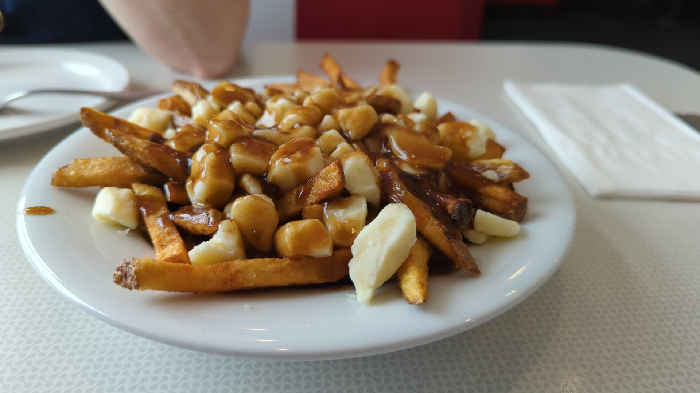
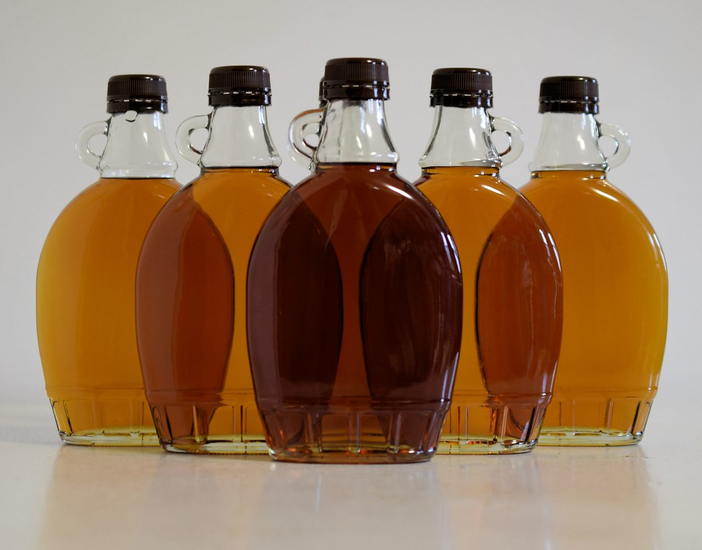
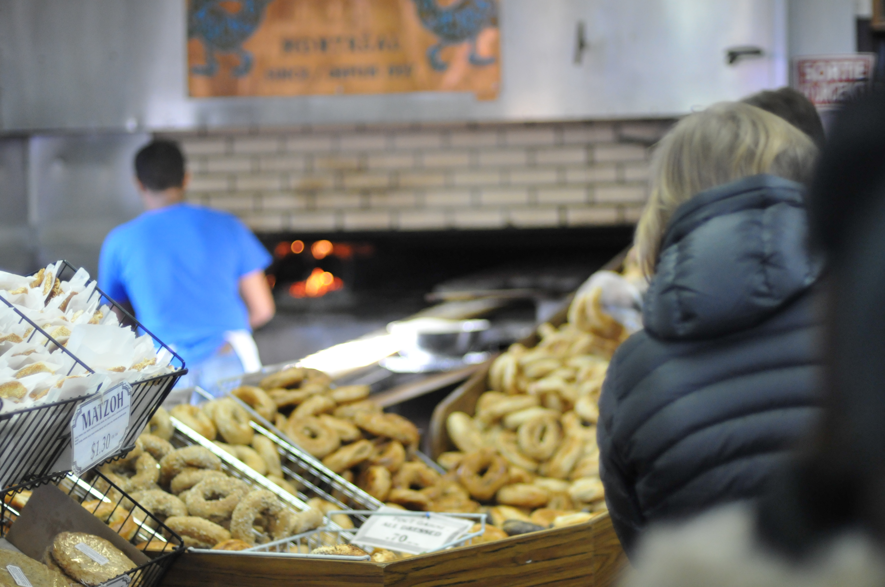

Poutine
Poutine is a popular Canadian dish mainly for the reason that the origin was rooted in Canadian Lore, as well as being deeply tied to Quebec culture.

Poutine is a popular Canadian dish mainly for the reason that the origin was rooted in Canadian Lore, as well as being deeply tied to Quebec culture.

Maple Syrup is famous for not only it's historical impact, but it's deep, rooted history with the Indigenous people. Maple Syrup is also geographically unique where Maple Syrup can only be produced in a very specific climate.
This Canadian treat was named after the coastal city of Nanaimo, British Columbia, where the delicacy first made its debut around the year 1950.

The Montreal Bagel's historical significance stems on its quirky ingredients & traditional recipe, surrounded by pride that Canadians are proud of.